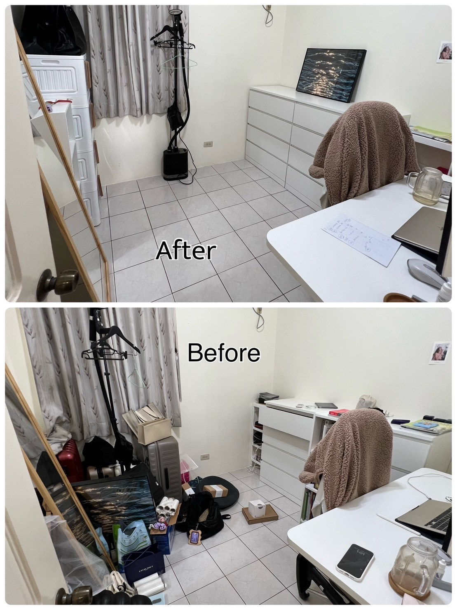

工作室太亂太雜，不知道從何整理起？想要擁有一個乾淨整齊的工作環境，讓自己更有效率更創意？如果你有這樣的困擾，讓我們來幫助你！
以下是我們最近完成的整理案例，讓我們來看看整理前後的差別吧！
工作室
工作室是自媒體經營者最重要的工作空間，也是展現自己風格和特色的地方。一個亂糟糟的工作室會讓人感到壓力和困惑，而一個乾淨明亮的工作室則會讓人感到動力和靈感。
客戶工作室原本是地上堆滿雜物，我們首先幫他清除了不必要或過期的物品，例如舊報紙、廢紙、空盒子等。然後，我們幫他將物品分類並收納到合適的地方，例如書籍放到書架上，攝影器材放到攝影包裡，接著，我們幫他調整桌面和椅子等家具位置。最後，我們幫他佈置了一些裝飾品，增加了工作室的美觀和氣氛。
這位自媒體經營者的工作室整理後變成了這樣：
你可以看到，整理後的工作室看起來更寬敞、明亮
結語
透過這個案例可以了解整理與收納的重要。若您也想要有個整齊又充滿樂秩序的工作空間，其實有個簡單的方法，就是預約家政GOOD居家收納清潔 的服務，整理、收納、清潔一次搞定，快來預約吧！